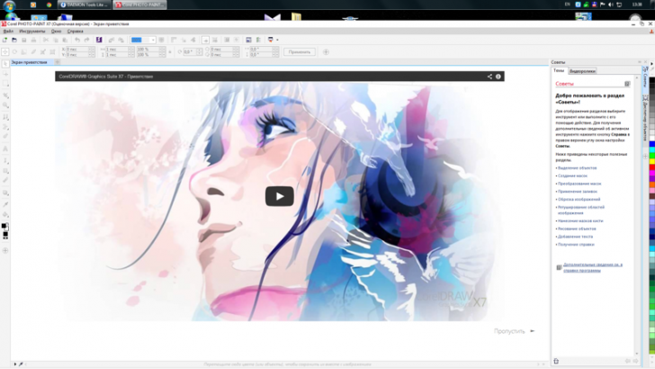
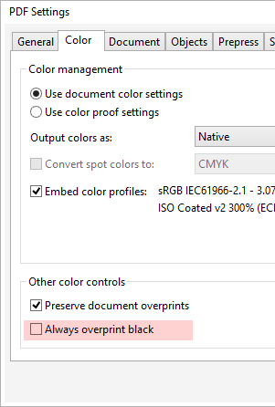

Ошибки в CorelDRAW x7
Des425 / 28.03.2014, 20:19
Форум:
Версия программы:
17.0.0.491
Ну теперь можно и о новых багах поговорить.
Со шрифтами пока не фсё гладко, то работает визуальное отображение то нет.
Ну теперь можно и о новых багах поговорить.
Со шрифтами пока не фсё гладко, то работает визуальное отображение то нет.
Sancho,
win 7 x64, corel x7 x64
никаких доп. программ для оформления нету, родная aero от семерки... а хотя вру, пропатчена кнопка пуск на свою картинку... забыл уже, попробую на машине без этого, отпишусь
Странно. Раз уж предыдущие рабочие пространства от X6 в X7 не подхватываются, начал потихоньку настраивать всё заново. И сразу проблема: по Alt+Shift+F11 макросы видны и запускаются (все запускать не пробывал). А вот если хочется вынести на панель и закрепить макрос, то через меню Tools/Customization/Commands (Macros) в списке многих нет. Например SanM_ExportToJPG да и многих других.
В чем может быть проблема?
Sancho,
таже история

забыл дописать в последнем скриншоте - win 7 x32. думаю связано с тем, что свой интерфейс сделали - изредка такое поведение и вдругих программах встречаю - и все они с неродными интерфейсами.
а, и еще - в первом скриншоте - кнопки закрыть и свернуть (см. правее названия докера text properties) некорректно отображаются (квадратиками), не критично, думаю эти символы берутся из какого-то шрифта который у меня слетел.
XmasterX, видимо это болезнь Win7, на 8-ке такой проблемы нет. В обновлении поди починят.
Тоже квадратики вместо кнопок закрыть, свернуть, вместо плюсика и т.д. А на работе нормально. А вообще как-то получше, чем в X6. Там работаешь и боишься, что вот-вот вылетит или еще что-нибудь. А Этот по стабильности напоминает мне 9 и X4
А почему когда делаешь publish to pdf отсутствует оверпринт на черный цвет? При печати в PS с последующей дистилляцией - всё ок.
kpars,

Санчо, полагаешь я это не выставил?
kpars, ну а в чём проблема? Я сделал экспорт, оверпринт в pdf есть.
Страницы